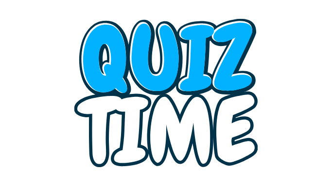
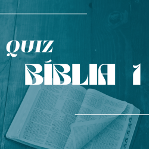
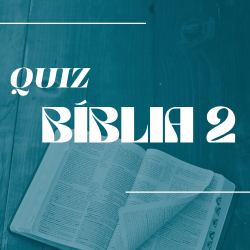

QUIZ BÍBLICO
Clique em "Iniciar Quiz" para começar a jogar.
Quiz Livro de Atos
Quiz Bíblia 1
Quiz Bíblia 2
Quiz Livro de Mateus
Questão atual: de
questões.
Escolha uma opção dentre as abaixo:
Quantidade de acertos:
Quantidade de erros:
Pontuação Final:
***
***